WAR-TCG
A five-colour trading card game about a kingdom fighting on every front. Any unit in your hand can become a resource, a threat or a shield, and you decide which.
- My role
- Sole designer: rules, colour pie, balance, card templates
- Team
- Solo project
- Timeline
- May 2026 to now
- Tools
- Apple Numbers, Affinity, Obsidian, AI coding tools
- Status
- 127 cards at concept stage. Card database
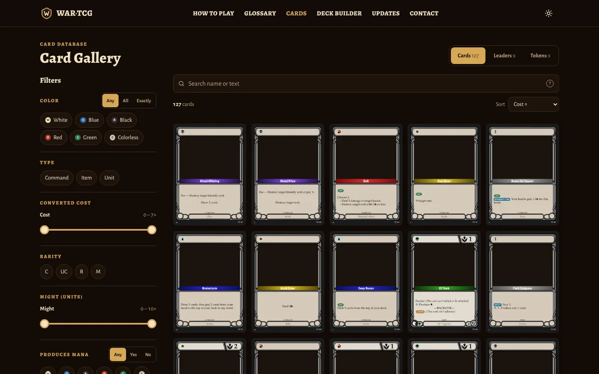
Design rules
WAR-TCG borrows what works from the games I play and avoids what frustrates players in them: mana screw and flood from Magic, and One Piece triggers you can't play around. Every card is held to a short list of rules:
- Always answerable. No hexproof or shroud. Every board state can be dealt with.
- Low upkeep at the table. No +1/+1 counters to track and no shuffling in the middle of a game. Searches look at the top cards and put the rest on the bottom.
- Rules text that reads like code. Keywords are nested, for example Rush: Unit, so every card parses the same way.
- No card costs 0. Every unit follows the balance formula, and the colours get roughly equal card counts.
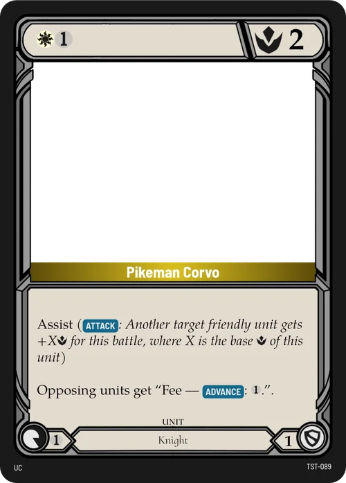
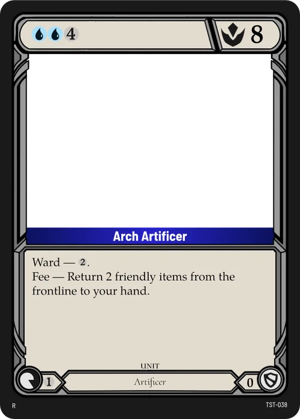
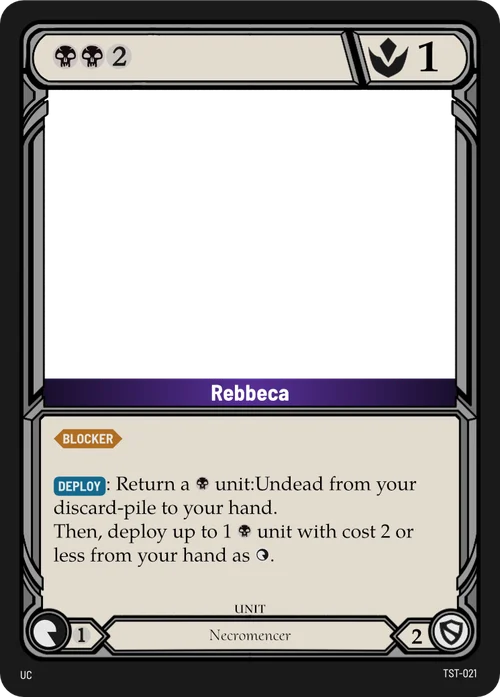
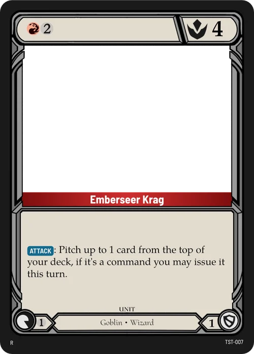
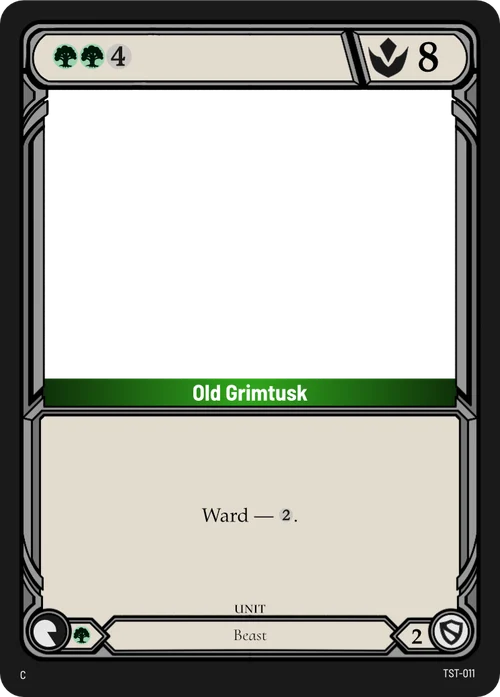
Resources without mana screw
- Problem
- In Magic, drawing too many or too few lands can lose a game before it starts.
- Solution
- There's no resource card. Once per turn you can station a unit from your hand in your Backline for free, where it taps to produce energy. Or you pay its cost and deploy it to the Frontline to fight. Backline units can later advance through the Middle, which holds only one unit.
- Result
- A unit you can't afford yet is still useful as next turn's energy, and resources can turn into threats over time.
The Middle came in a second pass. In May the board had two zones. In June I added the Middle, capped at one unit, to add travel time between producing energy and fighting, and to prevent big, sudden board swings.
Combat on one number
- Problem
- Games like Magic give units separate power and toughness and track damage on them, which is more to explain and more to remember.
- Solution
- Units fight with one number, Might . An attack hits if the attackers' total Might is at least the target's. A unit that's hit is destroyed. A Leader that's hit loses Life equal to the strongest attacker's Might. Attackers never take damage back.
- Result
- Combat is one comparison, and an effect like "−3 Might" works on any target. I also scaled all numbers down from thousands (3000) to single digits (3).
This went back and forth. In June I removed Life and had players defend Regions instead, so damage and removal used the same number. Leaders and Regions now have Life again. In August I kept Leader Might as a fixed budget, so every Region stays roughly equal in power no matter how many a deck runs.
Blocking by pitching
When you're attacked, you can pitch cards from your hand that have a Block value (0, 1 or 2). Each one adds its Block to the target's Might for that combat, and pitched cards go to the bottom of their owner's deck at the end of the turn. A defender can also tap one unit with Blocker to take the attack instead.
So a unit in hand has three uses: play it, station it, or keep it to block. In June I tried having Block lower the attacker's Might instead, to make attacks by several units easier to resolve. The current rules add Block to the defender again.
The colour pie
Five colours, each with a play style, signature mechanics and mechanics it may never use:
| Colour | Plays like | Signature mechanics | Never gets |
|---|---|---|---|
| White | Control with some aggro | Blocker, Convoke, Banish, Recover | Big units, direct removal |
| Blue | Control, with combo potential | Flash, Evasive, Foresight, Bounce | Direct removal, direct damage to Bases |
| Black | Control and combo | Delve, Mill, Discard, Destroy | Removing Items, gaining Base Might directly |
| Red | Aggro | Rush, Pierce, Advance, Impulse | Destroying Items, Recover, protecting its own units |
| Green | In the middle, leaning combo and aggro | Hunt, Overwhelm, Ramp | Removing units except by fighting |
Each of the ten colour pairs has its own written identity too. Blue and Red, for example, is "thinking before acting against acting without thinking", and it's a deck where Commands matter.
More from the card table
Ten more cards across the five colours and all three card types: units, commands and items.
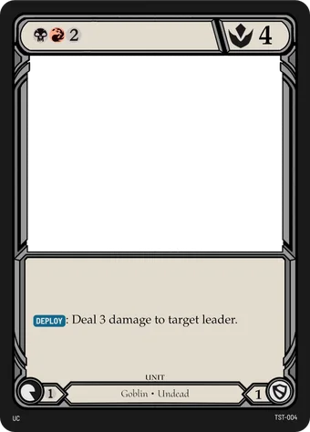
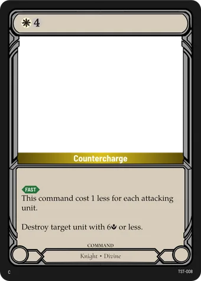
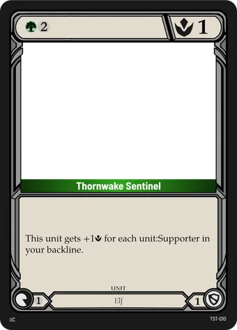
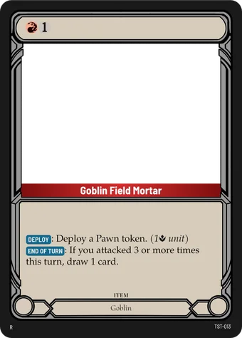
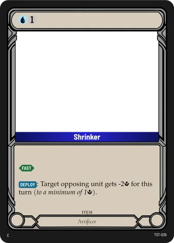
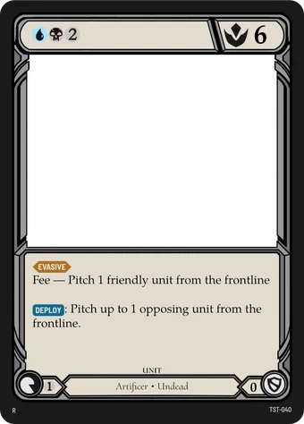
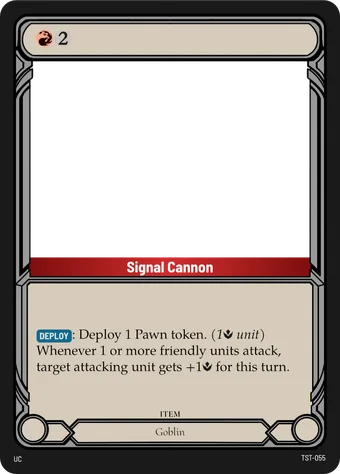
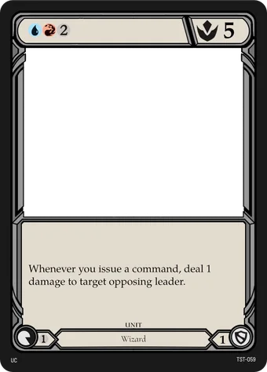
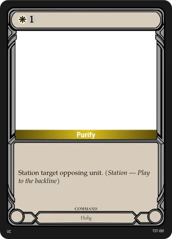
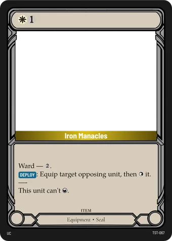
Balance
Every unit is priced with the same formula:
value − cost = 3 to 5where value = Might + Block + production + text. Each keyword counts 1, and a drawback like Fee — X counts −X. Cheap cards sit near 3 and expensive cards near 5.
In August the spreadsheet had drifted to a much looser scale, with keywords worth 2 or 3. I made the formula the single source of truth again and scaled the old text prices to 40%.
Target set size and cost curve
In August I set a target of 107 cards: 12 per colour, 2 for each of the 10 colour pairs, 7 colourless and 5 free slots, plus 5 Leaders and 10 Regions. The 92 costed cards follow this target curve, peaking at 3 with nothing at 0:
The July draft peaked at 4 with 104 costed cards. The card table has since grown to 127 cards, so whether 107 is still the target is one of the open questions below.
From the design log
Major design decisions go in a dated log with the reasoning. A few entries:
Front and Back line. Units act as resources when played to the Backline, so there's no mana screw and always a play to make.
Three zones. Added the Middle, capped at one unit, to add travel time and prevent sudden board swings.
Life replaced by Regions. "−3 Might" can now hit a unit, a Leader or a Region.
Defense and Layers split. Defense is the Might an attack needs to connect. Layers cap how much one hit removes. Pierce beats Layers, not Defense.
Iterating on the card frame
I build the frames in Affinity, and a script fills every card from the card table. These are four saved versions from August to October:
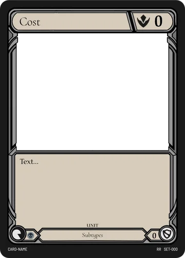
Aug 20First layout, with cost and Might in the top bar.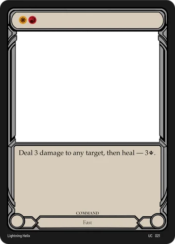
Aug 23Colour icons in the cost bar.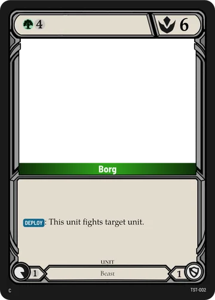
Sep 15A name bar in the card's colour and keyword badges. This is the frame the card database uses.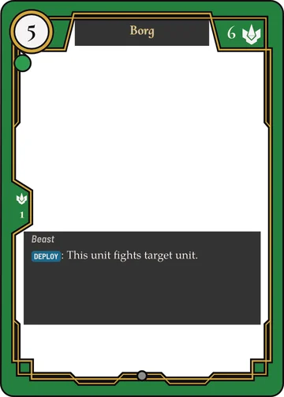
Oct 12An alternative layout with a full-colour frame and the name on top.
Which of the two current templates becomes the main one is still undecided.
The card fonts are custom builds of Barlow Semi Condensed, TeX Gyre Pagella and Cormorant Upright with the game's icons added as ligatures: typing {Might} or [DEPLOY] in a card's text gives you the icon. This site uses those fonts.
Tools
The same card data shows up in the spreadsheet, the rendered cards, the rules and the website. With AI coding tools, I set up a pipeline so a change only has to be made once:
- Card table. I edit cards in Numbers and export them.
- Card data. An import script turns the export into JSON. The build warns about keywords that aren't in the glossary.
- Card frames. An Affinity script renders every card from that data.
- Website. The site is built from the game repository. Each card change becomes a dated update post, tagged as a buff, nerf, rework or new card.
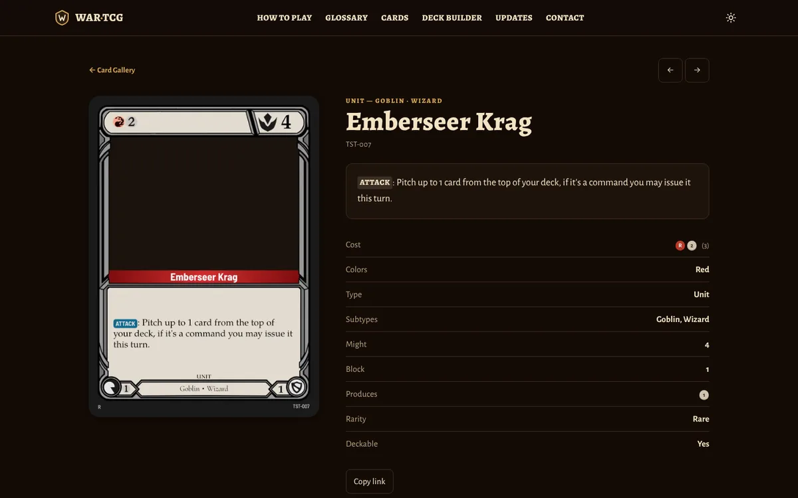
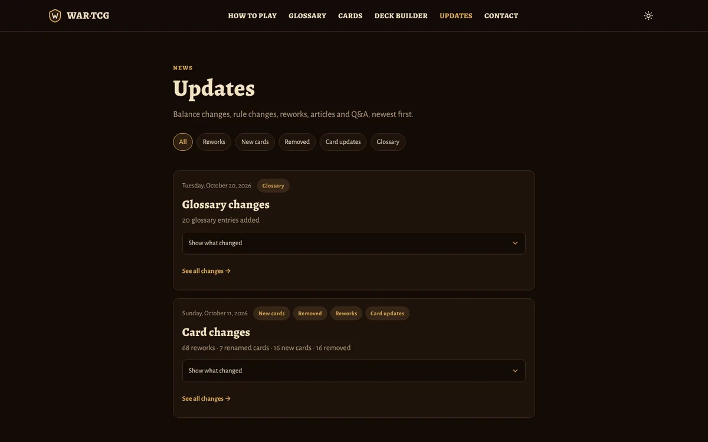
The site also has a deck builder that checks the deck rules as you build (1 Leader, 40 cards, up to 3 copies of a card, up to 3 Regions), a printable proxy sheet, and a design audit that reports colour counts, cost curves and wording problems.
Open questions
Each undecided rule has its own file until I answer it. Some of the current ones:
- Set size. Keep the 107-card target, or adopt the 127 cards in the table?
- First-turn balance. How much should going first cost?
- Coloured costs. How should coloured energy be paid?
- Regions. Their setup, their zone, Defense and Layers, and their names.
- Tournament rules. Match format, sideboarding and time limits.
I can walk you through the card table, the design log or a playtest deck in an interview.